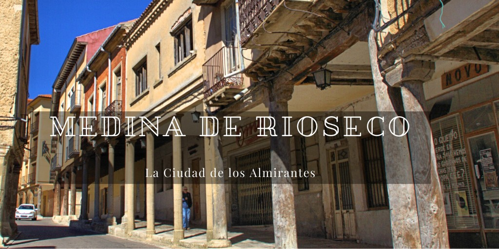
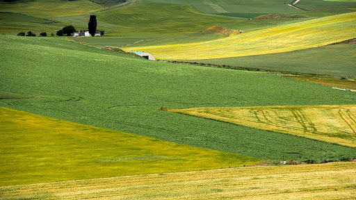
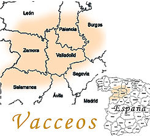
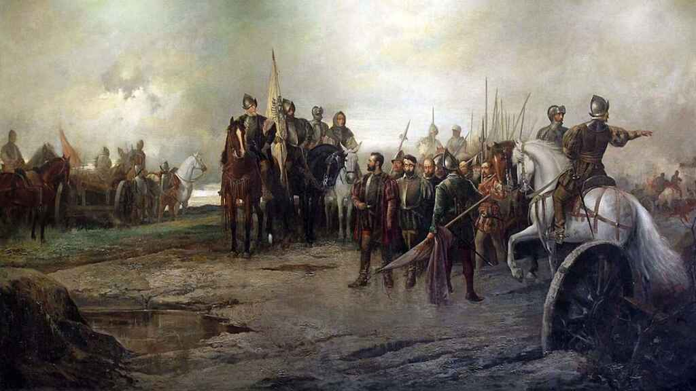
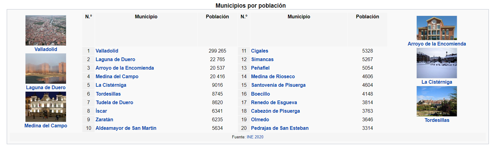
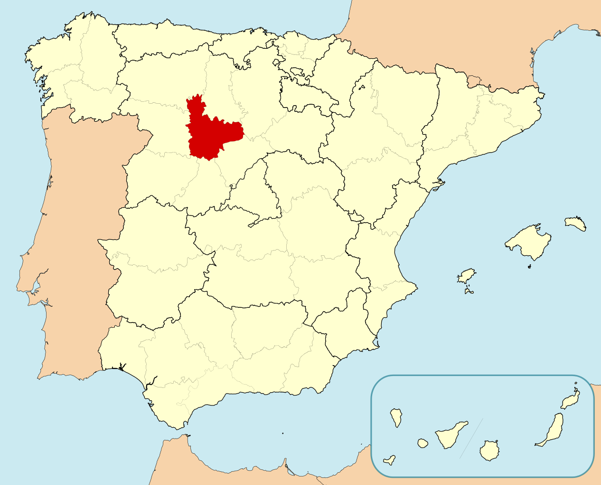
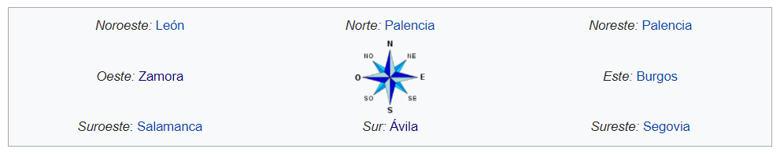
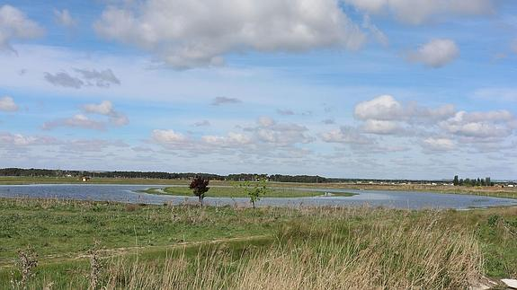
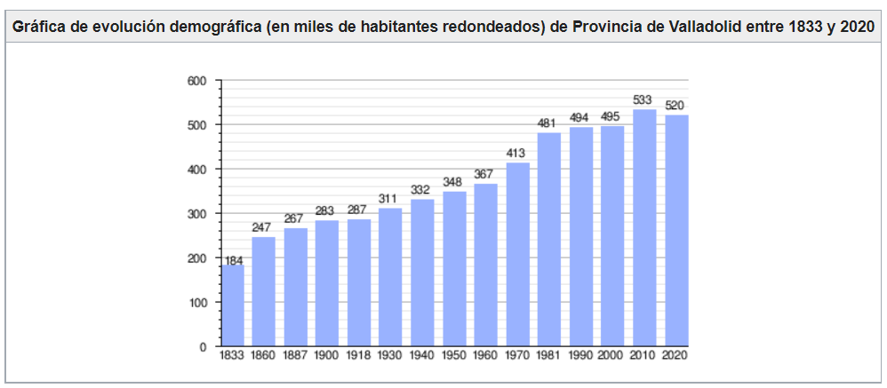

Valladolid
Cultura
La provincia de Valladolid deslumbra al viajero por el inmenso patrimonio que atesora en sus más de 8.000 km2. Conserva un importante legado cultural en cada uno de sus municipios, de gran atractivo para el visitante y una rica herencia histórico-artística: castillos, monasterios, iglesias, palacios, casas nobles, calzadas o puentes romanos, etc... todos ellos testigos de importantes acontecimientos.
A través de nuestros monumentos, por lo que significaron en su época y por los múltiples eventos que aquí se celebran, podemos conocer mejor y disfrutar de nuestra cultura, nuestro pasado y nuestra historia.
Cuenta con casi un centenar de bienes declarados de Interés Cultural (BIC), a los que hay que sumar los 48 de la capital; más 10 conjuntos históricos artísticos: Medina de Rioseco, Medina del Campo, Alaejos, Rueda, Tordesillas, Simancas, Urueña, Villalba de los Alcores, Montealegre y Valladolid capital.
Mantiene interesantes zonas arqueológicas, destacando: La Calzadilla (Villa Romana de Almenara de Adaja-Puras), el Puente y la Calzada romana de Becilla de Valderaduey, el Poblado Vacceo de Pintia en Peñafiel o el poblado medieval de Fuenteungrilllo en Villalba de los Alcores, que evocan un placentero recorrido por la historia. También es digno de mención el Canal de Castilla, una grandiosa obra de ingeniería del siglo XVIII, cuyo sueño de la navegabilidad ha sido recuperado en la actualidad.

Pero quizá lo más atractivo son los 20 castillos que se yerguen sobre su territorio y que guardan apasionantes historias. No en vano, Valladolid es la provincia que mayor número de castillos atesora en todo el territorio nacional.
Hechos históricos tuvieron lugar en estas tierras: la famosa Batalla del Moclín en Medina de Rioseco o la Batalla de los Comuneros en Villalar; son sitios históricos reconocidos y protegidos por la legislación del patrimonio.
Todos estos elementos muestran la excepcionalidad y singularidad de la provincia de Valladolid, su atrayente y fascinante valor histórico-artístico, su esplendoroso pasado, y que seguro cautivará a cualquier viajero que quiera colmar sus expectativas culturales en nuestra provincia.
Volver al inicio
Geografía
La provincia de Valladolid tiene una extensión de 8111 km²; está situada en el centro de la Meseta Norte (mitad superior de la meseta Ibérica) y se caracteriza por la uniformidad de su orografía (777 m s. n. m. de media con un desnivel máximo de 300 metros) convirtiéndose en la provincia más homogénea geográficamente hablando de España. El río Duero, que la atraviesa de este a oeste, se convierte en una especie de columna vertebral del territorio.
Está dominada por una extensa llanura en la que se distinguen: una zona de páramos calizos definidos por los valles de diferentes ríos, algunos de los cuales destacan en altitud originando un paisaje montañoso de cerros testigos, tales como los montes Torozos, cerro de Cuchillejo (932 m s. n. m.), cerro de San Cristóbal (843 m s. n. m.) y el Sardanedo (854 m s. n. m.); una zona de campiña, de suaves lomas; y separando una y otra, las denominadas «cuestas», profundos barrancos con laderas escarpadas, como las de Prado Ancho, Santovenía de Cabezón, de Pisuerga, etc.
Es la única provincia peninsular que carece absolutamente de montañas (evidentemente tampoco tiene costa), y también -junto con la provincia de Almería- la que menos superficie arbolada tiene (menos del 16 % del territorio).
Volver al inicio
Historia
La provincia de Valladolid se constituyó como tal mediante el Real Decreto de 29 de septiembre de 1833 impulsado por el ministro Javier de Burgos, quedando adscrita a la región histórica de Castilla la Vieja.
La primera población estable que se asentó en la actual provincia corresponde al pueblo prerromano de los vacceos (zona a la que se denominó "Región Vaccea"), que fueron pobladores de cultura muy avanzada y, como el resto de pueblos célticos llegaron a la península procedentes del norte de Europa (hay que indicar que también ocuparon territorios que corresponden a otras provincias). Ya entonces era definida por las crónicas como una región "libre y descubierta" y "un país abierto, de trigales, tierra desarbolada" y los vacceos se dedicaban a la ganadería y sobre todo la agricultura (cerealista). En el año 178 los romanos conquistaron el territorio aunque no consiguieron pacificarlo totalmente hasta el 29 Así pues las tierras que conforman la actual provincia quedaron bajo ocupación de estos, hasta las invasiones bárbaras de principios del siglo V d. C. El territorio quedó bajo el control del nuevo Reino Visigodo.
Tras la invasión de la península ibérica por los musulmanes en el año 711, estos llegaron a estas tierras tan solo un año después, en el 712. Sin embargo fue una zona relativamente despoblada. Posteriormente, durante la Reconquista, esta zona fue objeto de batallas entre los musulmanes y el cristiano Reino de León en los siglos IX y X. En 939, tras la batalla de Simancas se afianzó el dominio de la cuenca del Duero por los reinos cristianos. Valladolid fue repoblada en el año 1072 por el conde Pedro Ansúrez. A partir de aquí su historia quedó ligada a la de la Corona de Castilla. Ciudades como Medina del campo o Valladolid se convirtieron en importantes centros administrativos castellanos y además experimentaron un auge económico (mesta, ferias...). Tuvo una gran importancia en el Descubrimiento de América en 1492 (Colón acabará viviendo los últimos años de su vida hasta su muerte en 1506 en Valladolid) y la posterior colonización con personajes como Juan Ponce de León —descubridor de la Florida—. De hecho, en unas casas de Tordesillas, se firmó el Tratado de Tordesillas en el que se decidió el reparto del Nuevo mundo entre los Reyes Católicos y el Reino de Portugal dando lugar a Iberoamérica.
La sublevación de los comuneros en 1520 acabó con los cabecillas de esa revuelta ejecutados públicamente en Villalar de los Comuneros. Valladolid llegó a ser la capital del Imperio español entre los años 1601-1606. Cuando el Imperio español empieza a decaer debido a las continuas guerras en las que está involucrado y la aparición de nuevas potencias emergentes, se produce un retroceso económico en la zona, al igual que en el resto de la monarquía. En la guerra de sucesión española (1700-1715) se posicionó del lado del pretendiente borbón, que sería el que consiguió el trono. Durante la Guerra de la Independencia Española contra Francia (1808-1814) (Ver la Guerra de la Independencia en Valladolid), hubo una sucesión de batallas y la continua actuación de guerrilleros como "El empecinado". En el siglo XIX se inicia cierta industrialización relacionada con la agricultura, la ganadería y el ferrocarril.
Ya en el siglo XX desde el inicio de la guerra civil española (1936-1939) fue un importante núcleo de la sublevación (véase también: guerra civil española en la provincia de Valladolid). Durante el franquismo se produjo el éxodo del campo rural a las ciudades industriales, y tras la llegada de la democracia en España, en 1983 la provincia pasó a formar parte de la nueva comunidad autónoma de Castilla y León. Inició un proceso de crecimiento económico que alcanzó su máximo con la Burbuja inmobiliaria en España y luego sufrió la crisis económica de 2008, al igual que el resto del país, hasta 2014. Posteriormente hay un cierto crecimiento económico hasta el año 2020, cuando la pandemia de coronavirus provocó la declaración del estado de alarma en toda España, dando lugar a un fuerte parón económico.
Volver al inicio
Localidades
Localidades
La unidad administrativa básica en la que se divide la provincia son los municipios. Existen 225 en la actualidad. El municipio con más habitantes es la capital provincial. Entre el resto destacan municipios del centro de la provincia —principalmente del alfoz Valladolid— como Laguna de Duero, Arroyo de la Encomienda, La Cistérniga, Zaratán, Simancas, Santovenia de Pisuerga, Cigales o Cabezón de Pisuerga. En el sur de la provincia sobresale en cuanto a número de habitantes la ciudad de Medina del Campo (la cuarta en este aspecto de la provincia) y Olmedo; al este de la provincia Peñafiel, al sureste Íscar y al oeste Tordesillas.
La provincia tiene dos enclaves en otros territorios: el más grande es el Enclave de Roales y Quintanilla, formado por los municipios de Roales de Campos y Quintanilla del Molar situados entre las provincias de Zamora y León y el más pequeño es la Dehesa de San Llorente, situado dentro de la provincia de León y que forma parte de la localidad de Mayorga. Ambos enclaves forman parte de la comarca de Tierra de Campos.
Su capital, Valladolid, se encuentra a la cabeza de esta lista
Volver al inicio
Localización
Limita al norte con la provincia de Palencia, al este con la provincia de Burgos, al sureste con la provincia de Segovia, al sur con la provincia de Ávila, al suroeste con la provincia de Salamanca, al oeste con la provincia de Zamora y al noroeste con la provincia de León. Tiene un pequeño enclave entre las provincias de León y Zamora, los términos municipales de Roales de Campos y Quintanilla del Molar.
 Volver al inicio
Naturaleza
Reserva Natural de las Riberas de Castronuño-Vega del Duero: en la comarca de los Montes Torozos, Es una zona de páramos y vegas sedimentadas. Una zona migratoria y nidificación, para las aves acuáticas. El Duero está rodeado de bosques de ribera y constituye un ecosistema palustre muy interesante. Es una zona de grandes praderas y ausencia de grandes elevaciones. La fauna es abundante, como garza real, martinete, garceta común, culebras, patos cucharas, porrores comunes, porrones moñudos, cormoranes, albotán, águila pescadora, culebra de collar, águila de escalera, garza imperial, halcón peregrino, lagartijas cenicienta y colirroja, lagarto ocelad, ranita de San Antonio, sapos parteros, turón, tejón.

Lagunas del Raso de Portillo: Se trata de tres lagunas de reciente construcción situadas sobre lo que había sido un humedal histórico que llegó a alcanzar las 1900 hectáreas hasta que fue desecado en el siglo XIX. Es un lugar privilegiado para observar gran cantidad de aves que habitan en los humedales o que están de paso en su etapa migratoria.
Canal de Castilla: Se empezó a construir en 1753 y se tardó casi un siglo en finalizarlo ya que fue inaugurado en 1849. Tiene forma de "Y" invertida y su objetivo era el transporte del trigo de Castilla hacia los puertos del Mar Cantábrico pero la llegada del ferrocarril pronto le hizo quedar obsoleto. Atraviesa 9 municipios de la provincia. Con el paso del tiempo, en los márgenes del canal se han ido formando una serie de humedales de alto valor ecológico, que representan una isla de biodiversidad. Su alto valor ecológico está relacionado con su diversa vegetación acuática y con el importante número de especies vertebradas que albergan. Dentro de las aves, en el Canal hay 121 especies de aves nidificantes y también aves invernantes y aves migradoras y accidentales; 42 especies de mamíferos, 15 de ellas insectívoros; 11 especies de anfibios y 14 de reptiles y 14 especies de peces.
Pinar de Antequera: el Pinar de Antequera está considerado como el auténtico pulmón verde de la ciudad de Valladolid y el principal recurso natural de la capital vallisoletana. El pinar cuenta con amplios espacios para el senderismo, el deporte a pie o en bicicleta. Es muy frecuentado por los vecinos de la ciudad durante los fines de semana. La vegetación dominante es el pino piñonero, de inconfundible copa redonda y el pino resinero. También encontramos alguna encina, así como varias clases de arbustos como el espino albar, majuelo, retama, aulaga, torvisco, jaguarcillo, esparraguera silvestre, tomillo blanco y común, y el cantueso. Además de numerosas plantas herbáceas tales como líquenes, hongos y musgos. En cuanto a la fauna, la provincia cuenta con ejemplares de rabilargo, de gran valor ecológico. Entre las aves insectívoras se encuentran los pícidos y fringílidos, así como parejas de críalos, urracas, azores y alcotanes. Entre la fauna típica de matorral aparece la liebre común, el conejo e incluso la perdiz en los bordes de los cultivos.
Volver al inicio
Tradiciones
Desde 1957, con algunas interrupciones, se celebra el "Día de la Provincia", también conocida como "Día de los municipios". No es festivo pero sí se homenajea a los alcaldes de los 225 municipios vallisoletanos y al resto de políticos vallisoletanos y demás personas célebres nacidas en esta provincia. No tiene un día fijo en el calendario, pero suele celebrarse a finales de septiembre o inicios de octubre.
La provincia cuenta con numerosas tradiciones de interés cultural, que se pueden consultar en el enlace a continuación:
Enlace externoVolver al inicio
Otros
Demografía
Valladolid es la provincia más poblada de Castilla y León, con 520 716 habitantes a 1 de enero de 2020 (INE), lo que representa más del 21 % del total de la población de la comunidad. En el conjunto de España, la provincia aporta el 1,1 % de peso sobre el total, siendo la trigésima provincia más poblada.
La población de la provincia de Valladolid se caracteriza por ser una de las más longevas de España y de Europa. Sólo una ciudad tiene más de 100 000 habitantes, otras tres superan los 20 000 habitantes y otras nueve tienen más de 5000 habitantes.
Gastronomía
La gastronomía de la provincia de Valladolid es típicamente castellana, aunque cada zona presenta rasgos diferenciados. En la zona norte de la provincia, especialmente en la comarca de Tierra de Campos, es tradicional la elaboración de queso de oveja, entre los que destaca el queso de Villalón, curado o semicurado; se trata de un queso fresco también conocido como «Pata de Mulo». Son habituales también las sopas de ajo, el cocido elaborado lentamente en puchero a la lumbre, las lentejas guisadas elaboradas con la variedad pardina propia de Tierra de Campos y el pichón o palomino realizado con diferentes técnicas. Dentro de la repostería típica destacan los bollos de la Virgen de las Fuentes propios de Villalón de Campos, las rosquillas de palo, orejuelas, tortas de aceite y chicharrones. En Medina de Rioseco se pueden degustar las tradicionales almendras garrapiñadas o las marinas, hojaldre relleno de crema y cubierto con azúcar.

Volver al inicio